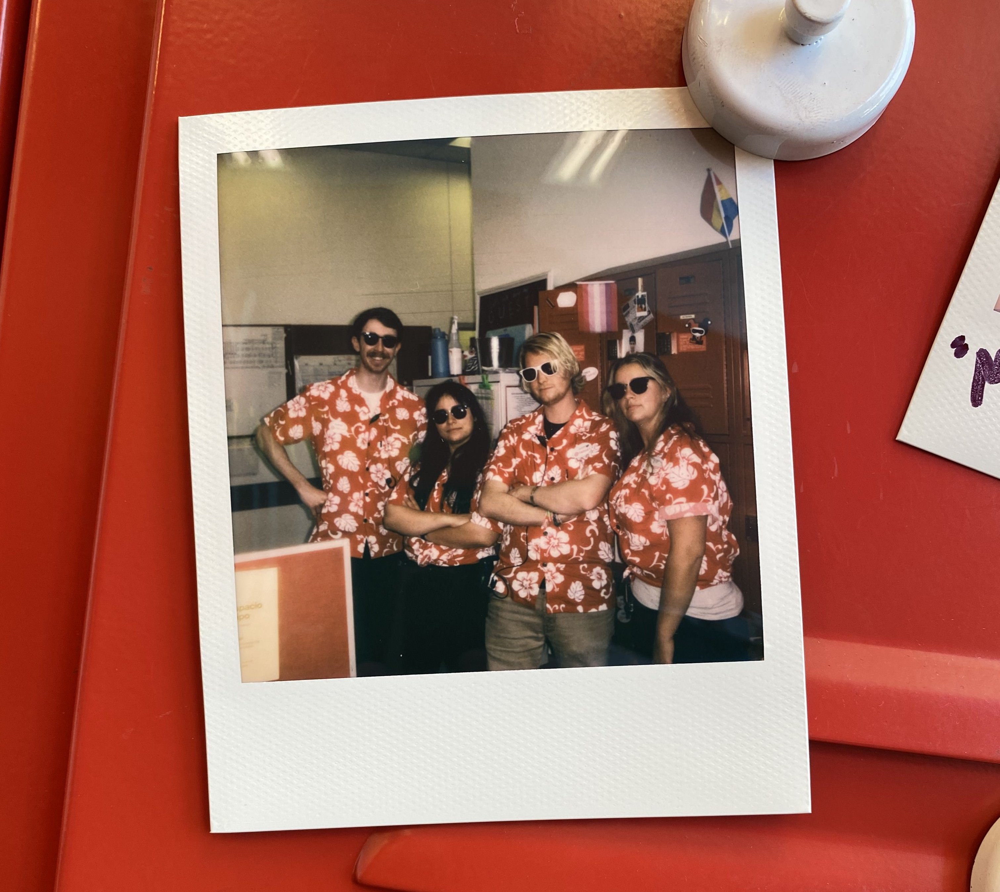

I'm not exactly sure how to start this, but there its done. My name is Zoe Mendez. I currently live in Helena Montana with my loving boyfriend and my giant dog. I was born in San Diego California. I pretty much born and raised there. I've had many adventures roadtrips and moving, but either way Montana is my current home. Whats a better place to have beautiful outdoors and hiking adventures. I wasn't quite ready for the weather when I moved out here, at least coming from California. Its been a great time and got a chance to have many adventures outside.
Now a little about my work history. I started working at Target right after I got out of high school. I started working there as a part time employee, while I was going to college. I went to college at Palomar Community College and got my General Associates Degree with an emphasis on math and science. I was originally looking at becoming a nurse before my career at Target really took off. During the summer in between my first year and second year of college, I was offered a full-time position as a Fulfilment Operations Team Leader. Fancy name? I thought so, but what that meant is I ran the online shipping department of a store. From the order pick-ups to shipping packages. I ran the whole thing. I also happened to be working at the second largest fulfilment store in Southern California. Crazy? Right? I was 19 years old and running a massive business. During that time I trained over 13 other team leaders for different stores all around Southern California. Eventually the time came and I wanted to move. When I moved to Helena Montana I was able to transer, but I did change positions. I became a General Merchandise Team Leader. Not as fun as of a name as before. What that meant was I was running the hardlines side of the sales floor. Making sure the store was clean and easy for the guest to shop. Making sure the product was full. A few months after being at my new store I was promoted to be an Executive Team Leader of General Merchandise & Food Sales. Even longer of a title! Me at 21 years old became an Executive Team Leader. I couldn't believe it at first. It was quite the accomplishment. That means I was the leader of the teams leaders. My businesses I owned were the truck unloads, the online shipping department, the salefloor, the food and beverage areas of the stores, as well as Starbucks. It was quite a lot to jugle, but it was a fun challenge. It was a sad goodbye, but I knew it was time for me to start something that I enjoyed even more!
I come from a family of 6. I'm the oldest and the only girl. I have 3 crazy younger brothers. My closest brother in age is 18 turning 19 in July, his name is Maximo. Next we have Logan. He is a tough little 11 year old turning 12 soon. Now, why did I say tough? Well every family goes through its own problems, but roughly two years ago this little guy was hospilized and diagnosed with Type 1 Diabetes. He was a trooper and continued to crack jokes throughout the entire journey. Last but not least we have the baby of the family named Kody. Kody is 8 years old. We are all quite spread about, but try to stay in touch with them as much as possible.